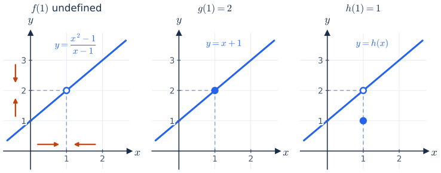
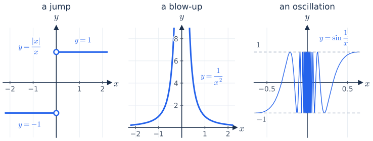
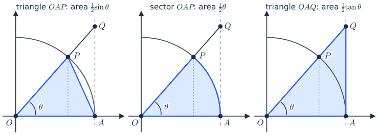
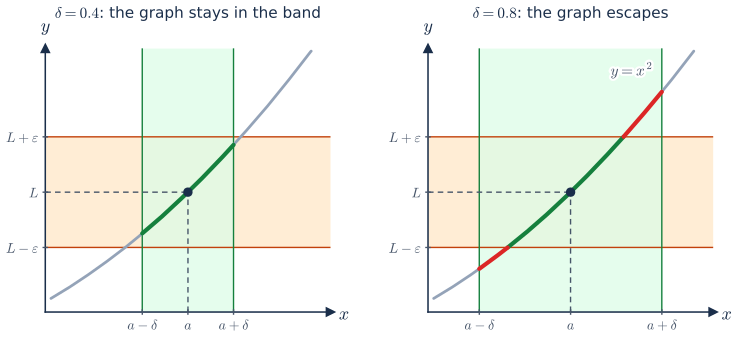

Calculus · Part I · Functions, limits and continuity
Module 2Limits
Learn what it means for a function to approach a value, and how to find limits from tables, graphs and algebra. You will prove the limit on which the calculus of sine and cosine rests, use the precise ε–δ definition in proofs, and see when a computer gets a limit wrong.
⏱ 240 minYou need: Module 1
In this module you will
Estimate a limit from a table of values or a graph, and recognise the three ways in which a limit can fail to exist
Find one-sided limits, and use them to decide whether a limit exists
Evaluate limits with the limit laws, direct substitution, factoring, rationalising and combining fractions
Use the squeeze theorem, and prove that sin θ/θ approaches 1 as θ approaches 0
State the ε–δ definition of a limit, and use it to prove limits of linear and quadratic functions
Explain cancellation error in floating-point arithmetic, and compute limits with SymPy
1
The idea of a limit
Module 1 ended with a falling ball. After t seconds it has fallen s(t)=4.9t2 metres, and its average speed between the times t=1 and t=1+h is the difference quotient
hs(1+h)−s(1)=9.8+4.9h(h=0).
As h shrinks towards 0, from either side, these average speeds settle down to 9.8 m/s, the speed of the ball at the instant t=1 (Section 1.6). Two things are worth noticing. You cannot put h=0: the quotient would be 0/0, which means nothing. And 9.8 is not one of the average speeds, since 9.8+4.9h=9.8 only when h=0. It is the number that the average speeds approach. Such a number is a limit, and the whole of calculus rests on the idea.
Here is the same situation without the physics. The function
f(x)=x−1x2−1
is not defined at x=1, where it gives 0/0. Near 1 it is defined, and a table of its values shows what it does there:
x
x−1x2−1
0.9
1.9
0.99
1.99
0.999
1.999
0.9999
1.9999
1.0001
2.0001
1.001
2.001
1.01
2.01
1.1
2.1
The closer x is to 1, from either side, the closer f(x) is to 2. Algebra explains why. Factor the numerator, x2−1=(x−1)(x+1), and cancel the factor x−1, which is not 0 when x=1:
f(x)=x−1(x−1)(x+1)=x+1(x=1).
So the graph of f is the line y=x+1 with one point missing, a hole at (1,2), like the rational function of Example 1.5 (Figure 2.1, left). As x approaches 1, f(x)=x+1 approaches 2.
Definition 2.1Limit
Let f be a function defined at every x in an open interval containing the number a, except possibly at a itself. If f(x) can be made as close to a number L as you like by taking x close enough to a, but not equal to a, then L is the limit of f(x) as x approaches a, and you write
x→alimf(x)=L.
Read limx→af(x)=L as “the limit of f of x as x approaches a is L”. Another way to write it is f(x)→L as x→a, read “f of x tends to L as x tends to a”. If there is no such number L, the limit does not exist. So far:
x→1limx−1x2−1h→0limhs(1+h)−s(1)=2,=9.8.
The name of the variable does not matter: in the second limit h plays the part of x, and 0 that of a.
Definition 2.1 is informal: “as close as you like” and “close enough” are not yet precise. Section 2.7 turns them into numbers, and with them into proofs. Until then, tables, graphs and algebra will do.
Key idea
A limit describes what f(x) does as x approaches a, never what happens at a. The value f(a) may be undefined, equal to the limit or different from it, and the limit is the same in all three cases (Figure 2.1).

Figure 2.1
Three functions with the same limit at x=1. Left: f(x)=x−1x2−1 is not defined at 1; as x approaches 1 from either side (orange arrows on the x-axis), f(x) approaches 2 (orange arrows beside the y-axis). Middle: g(x)=x+1, with g(1)=2. Right: h(x)=x+1 for x=1, and h(1)=1. Away from x=1 the three graphs are the same line, so all three limits at 1 are 2.
Example 2.1A limit from a table✓ Checked
Estimate the limit of xsinx as x→0, with x in radians.
The function is not defined at x=0, so compute its values near 0:
x
xsinx
1
0.84147098
0.5
0.95885108
0.1
0.99833417
0.01
0.99998333
0.001
0.99999983
Negative values of x give the same numbers: sine is odd (Section 1.4), so
−xsin(−x)=−x−sinx=xsinx.
The values approach 1, and it is natural to guess that
x→0limxsinx=1.
A table suggests a limit but does not prove it. Section 2.6 proves this one, which is among the most important limits in calculus.
Watch out
A table shows finitely many values, and they can mislead. Try f(x)=sin(π/x) at x=0.1, 0.01 and 0.001: the values are sin(10π),sin(100π) and sin(1000π), all exactly 0, so the table suggests the limit 0 as x→0. But at x=212≈0.095 the value is sin221π=1, and at x=2012≈0.00995 it is sin2201π=1 again. As close to 0 as you like there are points where f(x)=0 and points where f(x)=1, and the limit does not exist, for the reason that Example 2.3 gives for sin(1/x). Use tables to guess; use algebra or a proof to be sure.
2
One-sided limits
Module 1 drew the piecewise function
f(x)={x23−xif x<1,if x≥1,
whose graph jumps at x=1 (Example 1.3). Near 1 its values are
x
f(x)
0.9
0.81
0.99
0.9801
0.999
0.998001
1.001
1.999
1.01
1.99
1.1
1.9
To the left of 1, f(x)=x2 approaches 1; to the right, f(x)=3−x approaches 2. No single number is approached from both sides, so limx→1f(x) does not exist. But each side, taken alone, has a limit.
Definition 2.2One-sided limits
Let f be defined on an open interval (c,a) that ends at a. If f(x) can be made as close to a number L as you like by taking x close enough to a with x<a, then L is the limit from the left (or left-hand limit) of f at a, written
x→a−limf(x)=L.
The limit from the right (or right-hand limit), limx→a+f(x)=L, is defined in the same way, with f defined on an interval (a,d) and x>a.
Read x→a− as “x approaches a from the left”, through values below a, and x→a+ as “x approaches a from the right”. For the piecewise function above,
x→1−limf(x)=1,x→1+limf(x)=2,f(1)=2.
The two-sided limit of Definition 2.1 asks for closeness on both sides at once, so it exists exactly when the one-sided limits exist and agree:
Key idea
limx→af(x)=L exactly when limx→a−f(x)=L and limx→a+f(x)=L. If the one-sided limits differ, or if one of them does not exist, then limx→af(x) does not exist. (Theorem 2.7 proves this from the precise definition.)
Example 2.2A jump at 0✓ Checked
Find the one-sided limits of f(x)=x∣x∣ at 0. Does limx→0f(x) exist?
f is defined for every x=0. For x>0,∣x∣=x, so f(x)=x/x=1; for x<0,∣x∣=−x, so f(x)=−x/x=−1. Each piece is constant, so
x→0−limx∣x∣=−1andx→0+limx∣x∣=1.
The one-sided limits differ, so limx→0∣x∣/x does not exist. The graph (Figure 2.2, left) consists of two horizontal half-lines, with a jump of 2 at x=0.
Jumps are common in engineering. A circuit whose switch closes at time t=0 is described with the unit stepu(t), which is 0 for t<0 and 1 for t>0 (books differ about its value at 0 itself). Its limit from the left at 0 is 0 and its limit from the right is 1, whatever u(0) is. Signal processing builds switched signals from it.
Watch out
Two misreadings of the notation. x→1− means that x approaches 1 from below, through values such as 0.9, 0.99 and 0.999. It does not mean x→−1, and the values of x need not be negative. And one-sided limits do not depend on the value at the point: for the piecewise function above, f(1)=2 comes from the right-hand formula, but the limit from the right would still be 2 if f(1) were changed to 7.
3
Limits that do not exist
A limit can fail to exist in three ways. Figure 2.2 shows one of each.

Figure 2.2
Three ways for a limit not to exist, all at x=0. Left, a jump: ∣x∣/x is −1 to the left of 0 and 1 to the right. Middle, a blow-up: 1/x2 grows beyond every bound. Right, an oscillation: sin(1/x) swings between −1 and 1, faster and faster as x approaches 0; near 0 the swings are too close together to draw, and the graph looks like a solid band.
A jump. The one-sided limits exist but differ, as for ∣x∣/x at 0 (Example 2.2).
A blow-up. As x approaches 0, the values of 1/x2 grow beyond every bound:
x
x21
1
1
0.1
100
0.01
10000
0.001
1×106
and −x gives the same values as x. Whatever number L you name, 1/x2>∣L∣+1 for every x=0 with x2<1/(∣L∣+1), so close to 0 the values of 1/x2 are more than 1 away from L. No number is the limit. Module 3 describes this behaviour by writing limx→01/x2=∞, an infinite limit; but ∞ is not a number, and in the sense of Definition 2.1 the limit does not exist.
An oscillation. As x approaches 0, sin(1/x) swings between −1 and 1 infinitely often.
Example 2.3An oscillation✓ Checked
Show that limx→0sin(1/x) does not exist.
sinu=1 when u=2π,25π,29π,…, and sinu=−1 when u=23π,27π,211π,…. Taking u=1/x, that is, x=1/u, gives points closer and closer to 0 where sin(1/x) is 1 and −1 in turn:
x
x(decimal)
sin(1/x)
π2
0.6366
1
3π2
0.2122
−1
5π2
0.1273
1
7π2
0.09095
−1
9π2
0.07074
1
11π2
0.05787
−1
In general x=(4k+1)π2 gives sin(1/x)=1 and x=(4k+3)π2 gives sin(1/x)=−1, for k=0,1,2,…, and as k grows these points come as close to 0 as you like. So every open interval around 0, however small, contains points where sin(1/x)=1 and points where sin(1/x)=−1. If the values near 0 stayed within 21 of one number L, then 1 and −1 would both be within 21 of L, and so within 1 of each other; but they are 2 apart. No number L is the limit.
Watch out
“The limit does not exist” and “the function is not defined at a” are different statements, and neither follows from the other. x−1x2−1 is not defined at 1 but has the limit 2 there. The function that is −1 for x<0 and 1 for x≥0 is defined at 0, with the value 1, but has no limit there.
4
The limit laws
Tables and graphs suggest limits; the limit laws compute them, by building complicated limits from simple ones. The two simplest are
x→alimc=candx→alimx=a
for every constant c and every number a. The first says that a constant function stays at its constant; the second, that as x approaches a, the values of the function x approach a. Section 2.7 proves both from the precise definition.
Theorem 2.1Limit laws
Suppose that limx→af(x)=L and limx→ag(x)=M, and let c be a constant. Then:
Law
Statement
Sum
x→alim(f(x)+g(x))=L+M
Difference
x→alim(f(x)−g(x))=L−M
Constant multiple
x→alimcf(x)=cL
Product
x→alimf(x)g(x)=LM
Quotient
x→alimg(x)f(x)=ML, if M=0
Power
x→alim(f(x))n=Ln, for n=1,2,3,…
Root
x→alimnf(x)=nL, for n=2,3,…, if L>0 when n is even
The same laws hold for one-sided limits.
In words: the limit of a sum is the sum of the limits, the limit of a product is the product of the limits, and so on, provided that the limits of the pieces exist and, for a quotient, that the limit of the denominator is not 0. The laws say what you would expect: if f(x) is close to L and g(x) is close to M, then f(x)+g(x) is close to L+M and f(x)g(x) is close to LM. Turning “close” into a proof needs the precise definition, so the proofs come in Section 2.7, where a Going deeper box proves the sum, product and quotient laws. The other laws follow from those three: f−g is f+(−1)g; the constant multiple cf is the product of f with the constant function c; and the power law is the product law used n−1 times. The root law for square roots is Exercise 2.9. Other roots are handled in a similar way, with the difference of nth powers in place of the difference of squares; the case L=0, which odd n allow, is simpler, because nf(x)<c whenever ∣f(x)∣<cn.
Example 2.4Using the limit laws✓ Checked
Find
x→2limx+32x2−3x+1,
naming the law used at each step.
Start with the numerator. By the sum and difference laws, then the constant multiple law,
By the power law and the two basic limits, limx→2x2=22=4,limx→2x=2 and limx→21=1, so the numerator approaches 2⋅4−3⋅2+1=3. In the same way the denominator approaches 2+3=5. That is not 0, so the quotient law applies:
x→2limx+32x2−3x+1=53.
Direct substitution
The answer of Example 2.4, 53, is the value of the function at 2: 2+32⋅22−3⋅2+1=53. That is no accident.
Theorem 2.2Direct substitution
If p is a polynomial, then limx→ap(x)=p(a) for every number a. If r=p/q is a rational function and q(a)=0, then limx→ar(x)=r(a).
Proof
Write p(x)=cnxn+⋯+c1x+c0. By the power law and the basic limit limx→ax=a,limx→axk=ak for each k≥1; by the constant multiple law, limx→ackxk=ckak; and by the sum law, used once for each plus sign, together with limx→ac0=c0,
x→alimp(x)=cnan+⋯+c1a+c0=p(a).
If r=p/q, then limx→ap(x)=p(a) and limx→aq(x)=q(a), which is not 0, so the quotient law gives limx→ar(x)=p(a)/q(a)=r(a).
∎
Direct substitution also works for roots, by the root law: for example, limx→4x=4=2. Module 3 shows that it works for every function in Module 1’s catalogue, at every point inside its domain; such functions are called continuous. Until then this module uses direct substitution only for polynomials, rational functions and roots, and Section 2.6 proves by hand that sinθ→0 and cosθ→1 as θ→0.
Watch out
Two misuses of the laws. First, the quotient law needs M=0. For limx→1x−1x2−1 it would give 00, which is not a number: the law does not apply, and the limit, 2, has to be found another way, as in Section 2.1. Second, the laws work in one direction only. If the pieces have limits, so does the combination; but a combination can have a limit when its pieces do not. Neither sin(1/x) nor −sin(1/x) has a limit at 0, yet their sum is 0 for every x=0, with limit 0.
5
Algebraic techniques
The form 0/0
When direct substitution in a quotient gives 0/0, the limit may still exist, and it can be any number. Each of these four quotients gives 0/0 at x=1:
f(x)
f(x) for x=1
x→1limf(x)
x−1x2−1
x+1
2
x−13x−3
3
3
x−1x2−2x+1
x−1
0
x2−2x+1x−1
x−11
does not exist
The last one blows up at 1, with huge positive values to the right of 1 and huge negative values to the left. So 0/0 is called an indeterminate form: the form alone does not determine the limit. It is a signal to do more work, not an answer. The work is algebra that rewrites the quotient, for x=a, as a function to which direct substitution applies, and this theorem is what makes that legitimate:
Theorem 2.3Functions that agree near a point
If f(x)=g(x) for every x=a in an open interval containing a, and limx→ag(x)=L, then limx→af(x)=L. The same holds for a one-sided limit when f(x)=g(x) on an open interval that ends at a on that side.
Proof
The limit of f at a depends only on the values f(x) for x close to a with x=a. Close enough to a, every such x lies in the interval, where f(x)=g(x). So f(x) can be made as close to L as you like exactly when g(x) can. (In the language of Section 2.7: a δ that works for g, made smaller if necessary so that (a−δ,a+δ) lies inside the interval, works for f.) For a one-sided limit, the same argument looks at one side of a only.
∎
Factor and cancel
If substitution gives 0/0 in a quotient of polynomials, then x−a is a factor of both the numerator and the denominator. The reason: if p(a)=0, then p(x)=p(x)−p(a)=cn(xn−an)+⋯+c1(x−a), and each xk−ak has the factor x−a:
xk−ak=(x−a)(xk−1+xk−2a+⋯+ak−1).
So factor the numerator and the denominator, cancel x−a (allowed, since x=a), and substitute; if 0/0 appears again, repeat.
Example 2.5The speed of the falling ball✓ Checked
Find the speed of the falling ball, s(t)=4.9t2, at the time t=a:
h→0limhs(a+h)−s(a).
Substituting h=0 gives 0/0. Expand s(a+h) and subtract s(a):
By Theorem 2.3 and direct substitution (in the variable h),
h→0limhs(a+h)−s(a)=9.8a.
At time a the ball falls at 9.8a m/s: 9.8 m/s after one second, as in Module 1, and 19.6 m/s after two. Its speed grows by 9.8 m/s every second, the acceleration due to gravity of Module 1. Limits of this kind are the derivatives of Module 4.
Example 2.6Factor and cancel✓ Checked
Find
x→3limx2−9x2−x−6.
At x=3 the numerator is 9−3−6=0 and the denominator is 9−9=0, so both have the factor x−3:x2−x−6=(x−3)(x+2) and x2−9=(x−3)(x+3). For x=3 (and x=−3),
x2−9x2−x−6=(x−3)(x+3)(x−3)(x+2)=x+3x+2.
The new denominator is 6 at x=3, not 0, so by Theorem 2.3 and direct substitution
x→3limx2−9x2−x−6=3+33+2=65.
Rationalise
When the 0/0 comes from a difference that contains a square root, multiply the numerator and the denominator by the conjugate, the same two terms with the opposite sign between them. The conjugate of A−B is A+B, and their product,
(A−B)(A+B)=A−B2(A≥0),
has no square root left.
Example 2.7Rationalise✓ Checked
Find
x→0limxx+9−3.
Substitution gives (9−3)/0=0/0. Multiply the numerator and the denominator by the conjugate x+9+3, which is positive. For x=0 (and x≥−9),
By the root law, x+9→9=3 as x→0; then the sum and quotient laws give
x→0limxx+9−3=3+31=61.
Combine fractions
When the quotient contains fractions of its own, put them over a common denominator first.
Example 2.8Combine fractions✓ Checked
Find
x→3limx−3x1−31.
Substitution gives (31−31)/0=0/0. Over the common denominator 3x, the numerator is
x1−31=3x3−x=−3xx−3.
So, for x=3 (and x=0),
x−3x1−31=−3x(x−3)x−3=−3x1,
and by Theorem 2.3 and direct substitution the limit is −3⋅31=−91. This is the rate of change of 1/x at x=3.Exercise 1.9 found that the difference quotients of 1/x at a approach −1/a2, and −1/32=−91.
Watch out
Two slips with 0/0. “Substitution gives 0/0, so the limit is 0” (or 1, or “does not exist”) is wrong: 0/0 is a form, not a value, and the table at the start of this section shows four 0/0 forms with four different outcomes. And cancel factors, never terms: in x2−9x2−x−6 you may cancel the factor x−3 once both are factored, but you may not cross out x2 above and below to get −9−x−6, a different function (at x=1 it gives 97, while the original gives 43).
6
The squeeze theorem
Some limits are found by trapping. Multiply the oscillating sin(1/x) of Example 2.3 by x. Since ∣sin(1/x)∣≤1,
xsinx1=∣x∣sinx1≤∣x∣,that is,
−∣x∣≤xsinx1≤∣x∣(x=0).
The graph still oscillates infinitely often near 0, but between the lines y=∣x∣ and y=−∣x∣, which pinch together at the origin (Figure 2.3, left). The values have nowhere to go but 0.
Figure 2.3
Two squeezes. Left: xsin(1/x) oscillates infinitely often near 0 but stays between y=−∣x∣ and y=∣x∣ (dashed), which meet at the origin, so its limit at 0 is 0 (Example 2.9). Right: for 0<∣θ∣<π/2,θsinθ lies between cosθ and 1, and both of these approach 1 as θ→0 (Theorem 2.5).
Theorem 2.4The squeeze theorem
Suppose that g(x)≤f(x)≤h(x) for every x=a in an open interval containing a, and that
x→alimg(x)=x→alimh(x)=L.
Then limx→af(x)=L. The same holds for one-sided limits, with the inequalities on that side of a.
The reason: close to a, the values g(x) and h(x) are both as close to L as you like, and so is every number between them, f(x) included. The Going deeper box of Section 2.7 writes this out with the precise definition. The theorem is also called the sandwich theorem.
Example 2.9A squeezed oscillation✓ Checked
Show that limx→0xsin(1/x)=0.
The function is defined for every x=0, and for those x, as shown above, −∣x∣≤xsin(1/x)≤∣x∣. Both bounds approach 0. Indeed ∣x∣=−x for x<0 and ∣x∣=x for x>0, so both one-sided limits of ∣x∣ at 0 are 0, and limx→0∣x∣=0; then limx→0(−∣x∣)=0 by the constant multiple law. By the squeeze theorem, limx→0xsin(1/x)=0. The factor x tames the oscillation of Example 2.3.
Two trigonometric limits
The most important use of the squeeze theorem is the limit guessed in Example 2.1. It needs one inequality from the geometry of the unit circle. Let 0<θ<π/2. In Figure 2.4, O is the origin, A=(1,0),P=(cosθ,sinθ) is the point of the unit circle at angle θ, and Q=(1,tanθ) is where the line OP meets the vertical line x=1. Three regions sit one inside the next: the triangle OAP, the sector OAP (the slice of the disc between the radii OA and OP) and the triangle OAQ. So their areas increase in that order. The triangle OAP has base OA=1 and height sinθ. The sector is the fraction θ/(2π) of the whole disc, whose area is π, so its area is θ/2. The triangle OAQ has base 1 and height tanθ. Therefore
21sinθsinθ<21θ<21tanθ,so<θ<tanθ(0<θ<2π).

Figure 2.4
The areas behind Theorem 2.5, for an angle θ between 0 and π/2. The triangle OAP (left) lies inside the sector OAP (middle), which lies inside the triangle OAQ (right), so 21sinθ<21θ<21tanθ.
Example 2.10Sine and cosine near 0✓ Checked
Show that limθ→0sinθ=0 and limθ→0cosθ=1.
For 0<θ<π/2,sinθ>0 (the point P lies above the x-axis), and the inequality above gives sinθ<θ; so 0<sinθ<θ. Sine is odd, so for −π/2<θ<0 this becomes θ<sinθ<0. In both cases
−∣θ∣≤sinθ≤∣θ∣(0<∣θ∣<2π),
and both bounds approach 0 (Example 2.9), so limθ→0sinθ=0 by the squeeze theorem.
For the cosine, use sin2θ+cos2θ=1. For 0<∣θ∣<π/2 the point P lies to the right of the y-axis, so cosθ>0 and 1+cosθ>1. Multiply and divide by 1+cosθ:
1−cosθ=1+cosθ(1−cosθ)(1+cosθ)=1+cosθsin2θ.
This lies between 0 and sin2θ, because the denominator is greater than 1, and sin2θ≤θ2 by the first part. So 0≤1−cosθ≤θ2. Since θ2→0, the squeeze theorem gives 1−cosθ→0, and the difference law gives cosθ=1−(1−cosθ)→1−0=1.
Theorem 2.5The limit of sin θ/θ
With θ in radians,
θ→0limθsinθ=1.
Proof
Let 0<θ<π/2. Dividing sinθ<θ by θ>0 gives θsinθ<1. Multiplying θ<tanθ=cosθsinθ by θcosθ>0 gives cosθ<θsinθ. So
cosθ<θsinθ<1.
Cosine is even (Section 1.4), and so is θsinθ (Example 2.1), so the same inequality holds for −π/2<θ<0 (Figure 2.3, right). As θ→0,cosθ→1 (Example 2.10), and the constant 1 stays at 1. By the squeeze theorem, θsinθ→1.
∎
Theorem 2.6The limit of (1 − cos θ)/θ
With θ in radians,
θ→0limθ1−cosθ=0.
Proof
For 0<∣θ∣<π/2,1+cosθ>0. Multiply the numerator and the denominator by 1+cosθ, and use 1−cos2θ=sin2θ:
θ1−cosθ=θ(1+cosθ)1−cos2θ=θsinθ⋅1+cosθsinθ.
As θ→0,θsinθ→1 (Theorem 2.5), sinθ→0 and 1+cosθ→2 (Example 2.10). By the product and quotient laws, the limit is 1⋅20=0.
∎
Theorem 2.5 says that sinθ≈θ for small θ, with an error that is small even compared with θ itself: at θ=0.1 the ratio sinθ/θ is about 0.99833. Physicists use this small-angle approximation, for instance for a pendulum that swings through small angles, and Module 5 uses Theorems 2.5 and 2.6 to find the rate of change of sinx.
Example 2.11Using the two limits✓ Checked
Find the limits as x→0 of (a) xsin3x and (b) xtanx.
(a) Theorem 2.5 needs the same angle above and below. So put θ=3x and write
xsin3x=3⋅3xsin3x=3⋅θsinθ.
As x→0 with x=0,θ→0 with θ=0, so sinθ/θ→1. (Section 2.7 makes this step precise: if sinθ/θ is within ε of 1 whenever 0<∣θ∣<δ, then sin3x/(3x) is within ε of 1 whenever 0<∣x∣<δ/3, because then 0<∣3x∣<δ.) By the constant multiple law,
x→0limxsin3x=3⋅1=3.
(b) Write
xtanx=xsinx⋅cosx1.
The first factor approaches 1 (Theorem 2.5) and cosx→1 (Example 2.10), so by the product and quotient laws
x→0limxtanx=1⋅11=1.
Watch out
Theorem 2.5 needs radians. An angle of x degrees is πx/180 radians, so in degrees the argument of Example 2.11 gives
not 1: one reason why calculus works in radians. And only sinθ/θ, with the same θ above and below, approaches 1: xsin3x approaches 3.
7
The precise definition
Definition 2.1 rests on two phrases, “as close as you like” and “close enough”. To prove that a limit is L, or that a function has no limit, you must say exactly what they mean. The answer is the foundation that Cauchy, in the 1820s, and Weierstrass, in the 1860s and 1870s, gave to calculus. It measures closeness by distances: ∣f(x)−L∣ is the distance between f(x) and L, and ∣x−a∣ is the distance between x and a (Section 1.3). For a positive number δ,
∣x−a∣<δmeansa−δ<x<a+δ,
and 0<∣x−a∣<δ says, in addition, that x=a. In the same way, ∣f(x)−L∣<ε means L−ε<f(x)<L+ε. The Greek letters ε (“epsilon”) and δ (“delta”) are the traditional names of these two distances.
Definition 2.3Limit, precisely
Let f be defined on an open interval containing a, except possibly at a itself. Then limx→af(x)=L means: for every number ε>0 there is a number δ>0 such that, for every x with 0<∣x−a∣<δ,
∣f(x)−L∣<ε.
Each phrase of Definition 2.1 has its precise counterpart:
Definition 2.1
Definition 2.3
f(x) as close to L as you like
for every ε>0,∣f(x)−L∣<ε
by taking x close enough to a
there is a δ>0 with ∣x−a∣<δ
but not equal to a
0<∣x−a∣
One-sided limits are made precise in the same way: for limx→a−f(x)=L, replace 0<∣x−a∣<δ by a−δ<x<a, and for limx→a+f(x)=L by a<x<a+δ.
Challenge and response
Read Definition 2.3 as a game for two players. The challenger names a tolerance ε>0, as small as they like. You respond with a δ>0. You win the round if every x with 0<∣x−a∣<δ gives ∣f(x)−L∣<ε. On the graph (Figure 2.5): over the strip a−δ<x<a+δ, apart from x=a itself, the graph must stay inside the band L−ε<y<L+ε.
limx→af(x)=L means that you can win every round: whatever ε the challenger names, you have a winning δ.
Your δ is chosen after ε, and may depend on it; usually a smaller ε needs a smaller δ.
Once a δ wins, every smaller positive δ wins too, since it lets in fewer x.
To show that L is not the limit, the challenger needs one ε that no δ can answer.

Figure 2.5
The game for y=x2 near a=3, with L=9 and the challenge ε=3. The orange band is L−ε<y<L+ε; the green strip is a−δ<x<a+δ. Left: with δ=0.4 the graph over the strip stays in the band, so δ=0.4 wins. Right: with δ=0.8 the graph leaves the band near both edges of the strip (red), so δ=0.8 loses.
Think of it like this
A machine cuts square tiles that should have an area of 400 cm², and so a side of 20 cm. The customer’s tolerance on the area is the challenge ε; the accuracy to which the side must be cut is the response δ. A tighter tolerance needs a more accurate cut, but every tolerance can be met by a cut that is accurate enough: that is what lims→20s2=400 means. Exercise 2.8 works out the accuracy needed for a tolerance of 1 cm².
Try it
Play the game. With x−1x2−1 at a=1, set ε=0.5 and find the largest δ on the slider that wins; then make ε smaller and find δ again. What is the pattern? Do the same for xsinx, where δ can be much larger than ε, and for xsin(1/x), where δ=ε always wins (Example 2.9 shows why). Zoom in to see the graph close to the point. Then choose ∣x∣/x or sin(1/x), which have no limit at 0: try each candidate L, and check that once ε≤1 no δ wins.
Proofs with ε and δ
A proof that limx→af(x)=L is a strategy for the game: a rule that turns any ε into a winning δ. You find it in two stages. In the scratch work you start from ∣f(x)−L∣<ε and work backwards to a condition on ∣x−a∣. In the proof you run the argument forwards, from 0<∣x−a∣<δ to ∣f(x)−L∣<ε.
Example 2.12An ε–δ proof for a line✓ Checked
Prove that limx→2(3x−1)=5.
Scratch work.∣(3x−1)−5∣=∣3x−6∣=3∣x−2∣, and this is less than ε exactly when ∣x−2∣<ε/3. So try δ=ε/3.
Proof. Let ε>0, and choose δ=ε/3. If 0<∣x−2∣<δ, then
∣(3x−1)−5∣=3∣x−2∣<3δ=ε.
So every challenge is met, and limx→2(3x−1)=5. For example, the challenge ε=0.3 is met by δ=0.1: if x is within 0.1 of 2, then 3x−1 is within 0.3 of 5.
The same argument proves that limx→a(mx+b)=ma+b for every line with slope m=0: since ∣(mx+b)−(ma+b)∣=∣m∣∣x−a∣, the response δ=ε/∣m∣ wins. If m=0, the function is the constant b,∣f(x)−b∣=0<ε for every x, and every δ wins. With m=0 and b=c, and with m=1 and b=0, this proves the two basic limits of Section 2.4, limx→ac=c and limx→ax=a.
Example 2.13An ε–δ proof for a parabola✓ Checked
Prove that limx→3x2=9.
Scratch work.x2−9=∣x−3∣∣x+3∣. The factor ∣x−3∣ can be made as small as you like; the factor ∣x+3∣ is not constant, but it is not large when x is near 3. So agree in advance to take δ≤1. Then ∣x−3∣<1 means 2<x<4, so 5<x+3<7 and ∣x+3∣<7. With that, x2−9<7∣x−3∣, which is less than ε when ∣x−3∣<ε/7. Both requirements hold if δ is the smaller of 1 and ε/7, written δ=min(1,ε/7).
Proof. Let ε>0 and δ=min(1,ε/7). Suppose that 0<∣x−3∣<δ. Since δ≤1,2<x<4, and so ∣x+3∣<7. Since δ≤ε/7,∣x−3∣<ε/7. Therefore
x2−9=∣x+3∣∣x−3∣<7⋅7ε=ε.
For the challenge ε=0.5 the proof gives δ=min(1,70.5)=141≈0.0714. That is not the largest δ that wins: x2<9.5 when x<9.5≈3.0822, and x2>8.5 when x>8.5≈2.9155, so every δ up to 9.5−3≈0.0822 wins. A proof does not need the best δ, only one that wins.
Proving that a limit does not exist
limx→af(x)=L is false when the challenger has a winning move: some ε>0 such that, for every δ>0, some x with 0<∣x−a∣<δ has ∣f(x)−L∣≥ε. To show that a limit does not exist, show this for every number L. The main tool is the triangle inequality:
∣p+q∣≤∣p∣+∣q∣,
for all real numbers p and q. It holds because −∣p∣≤p≤∣p∣ and −∣q∣≤q≤∣q∣; adding gives −(∣p∣+∣q∣)≤p+q≤∣p∣+∣q∣, which says that ∣p+q∣≤∣p∣+∣q∣.
Example 2.14Proving that a limit does not exist✓ Checked
Prove that x∣x∣ has no limit at 0.
Let L be any number. The challenger names ε=1; let δ>0 be any response. The points x=δ/2 and x=−δ/2 both satisfy 0<∣x∣<δ, and f(δ/2)=1 while f(−δ/2)=−1 (Example 2.2). If both values were within 1 of L, the triangle inequality would give
2=∣1−(−1)∣=∣(1−L)+(L+1)∣≤∣1−L∣+∣L+1∣<1+1=2,
which is impossible. So at least one of the two points lies outside the band L−1<y<L+1, and δ loses. Since δ was any response and L any number, no number is the limit of ∣x∣/x at 0.
The same strategy, with the points of Example 2.3, proves that sin(1/x) has no limit at 0 (Exercise 2.10). It also shows that a limit, when it exists, is a single number. Suppose f(x) tended to L and to M=L, and challenge both limits with ε=∣L−M∣/2. For x=a close enough to a, both ∣f(x)−L∣<ε and ∣f(x)−M∣<ε, and then, by the triangle inequality,
which is impossible. The precise definitions also prove the key idea of Section 2.2:
Theorem 2.7One-sided and two-sided limits
limx→af(x)=L exactly when limx→a−f(x)=L and limx→a+f(x)=L.
Proof
Suppose that limx→af(x)=L, and let ε>0. A δ that wins for the two-sided limit wins for each one-sided limit, since a−δ<x<a and a<x<a+δ both imply 0<∣x−a∣<δ. Conversely, suppose that both one-sided limits are L, and let ε>0. There is a δ1>0 that wins for the x with a−δ1<x<a, and a δ2>0 that wins for the x with a<x<a+δ2. Let δ=min(δ1,δ2). Every x with 0<∣x−a∣<δ satisfies a−δ1<x<a or a<x<a+δ2, so ∣f(x)−L∣<ε.
∎
Watch out
The order of the words matters. “For every ε there is a δ” lets δ depend on ε. “There is a δ that wins for every ε” says much more: then ∣f(x)−L∣ is less than every positive number, so f(x)=L for every x with 0<∣x−a∣<δ. And winning one round proves nothing: δ=0.1 answers ε=0.3 for 3x−1 at 2, but a proof must answer every ε, as δ=ε/3 does.
Going deeperProofs of the squeeze theorem and the limit laws
A first reading may skip this box. In each proof, ε>0 is a challenge, and the task is to find a winning δ.
Squeeze theorem. Suppose that g(x)≤f(x)≤h(x) for x=a in an open interval containing a, and that g(x)→L and h(x)→L. Choose δ>0 so small that (a−δ,a+δ) lies in that interval and that ∣g(x)−L∣<ε and ∣h(x)−L∣<ε for 0<∣x−a∣<δ (the smallest of three δs will do). For such x,
L−ε<g(x)≤f(x)≤h(x)<L+ε,
so ∣f(x)−L∣<ε.
From here on, limx→af(x)=L and limx→ag(x)=M.
Sum law. Challenge f with ε/2: there is a δ1>0 such that ∣f(x)−L∣<ε/2 whenever 0<∣x−a∣<δ1. In the same way there is a δ2>0 for g. Let δ=min(δ1,δ2). If 0<∣x−a∣<δ, both inequalities hold, and by the triangle inequality
Product law. First, g stays bounded near a: the challenge 1 gives a δ0>0 with ∣g(x)−M∣<1, and so ∣g(x)∣<∣M∣+1, for 0<∣x−a∣<δ0. Next,
f(x)g(x)−LM=(f(x)−L)g(x)+L(g(x)−M),
so, by the triangle inequality, for those x
∣f(x)g(x)−LM∣≤∣f(x)−L∣(∣M∣+1)+∣L∣∣g(x)−M∣.
Now choose δ≤δ0 so small that ∣f(x)−L∣<2(∣M∣+1)ε and ∣g(x)−M∣<2(∣L∣+1)ε for 0<∣x−a∣<δ. Then
∣f(x)g(x)−LM∣<2ε+∣L∣+1∣L∣⋅2ε<2ε+2ε=ε.
Quotient law. Since f/g=f⋅(1/g), the product law reduces this to limx→a1/g(x)=1/M, for M=0. The challenge ∣M∣/2 gives a δ0>0 with ∣g(x)−M∣<∣M∣/2 for 0<∣x−a∣<δ0. For those x, the triangle inequality ∣M∣≤∣M−g(x)∣+∣g(x)∣ gives ∣g(x)∣>∣M∣/2; in particular g(x)=0, so 1/g(x) is defined, and
g(x)1−M1=∣g(x)∣∣M∣∣M−g(x)∣≤∣M∣22∣g(x)−M∣.
Choose δ≤δ0 so small that ∣g(x)−M∣<21ε∣M∣2 for 0<∣x−a∣<δ; then ∣1/g(x)−1/M∣<ε.
8
Limits on a computer
Testing a δ
The explorer of Section 2.7 decides whether a δ wins by computing f at thousands of points of the strip. The same test takes a few lines of Python with NumPy.
Compute itTesting a δ at many points
The function wins checks ∣f(x)−L∣<ε at many points x with 0<∣x−a∣<δ; here it tests the parabola of Example 2.13 against the challenge ε=0.5:
Python
import numpy as np
defwins(f, a, L, eps, delta, n=200_000):
# n points strictly inside (a - delta, a + delta), none of them equal to a
xs = a + delta*np.linspace(-1, 1, n + 2)[1:-1]
xs = xs[xs != a]
returnbool(np.all(np.abs(f(xs) - L) < eps))
for delta in [0.1, 0.0825, 0.082, 1/14]:
print(f"delta = {delta:.4f}: {wins(lambda x: x**2, 3, 9, 0.5, delta)}")
The test agrees with Example 2.13: the proof’s δ=141≈0.0714 wins, and the best δ lies between 0.082 and 0.0825; it is 9.5−3≈0.0822. But a computer test, like a table, looks at finitely many points and one ε at a time, so it gives evidence, not proof: a function such as sin(1/x) can misbehave between the points tested. The proof of Example 2.13 covers every x and every ε at once.
Cancellation
At the end of Module 1, Python computed the falling ball’s average speed over [1,1.001] as 9.804899999998895, where the exact value is 9.8049, and the series promised an explanation. A computer stores a real number in floating point: in binary, rounded to about 16 significant decimal digits. So almost every number is stored slightly wrong, typically in its 16th digit (even 4.9 has no exact binary form). That is harmless until two nearly equal numbers are subtracted. Here s(1.001)=4.9098049 and s(1)=4.9 agree in their first three digits; in the difference, 0.0098049, those digits cancel, and the rounding errors, which were in the 16th digit of s(1.001), are now in the 13th digit of the result. Dividing by h=0.001 does not repair them. This loss of accuracy when nearly equal numbers are subtracted is called cancellation error. The closer the two numbers, the more digits cancel: subtracting numbers that agree in their first k digits loses about k of the 16.
Compute itCancellation in floating point
First the falling ball, with h shrinking further than in Module 1:
Python
defs(t):
return4.9*t**2for h in [1e-3, 1e-6, 1e-9, 1e-12, 1e-15]:
print(h, (s(1 + h) - s(1))/h)
The exact values are 9.8+4.9h: 9.8049, 9.8000049, 9.8000000049, and so on. As h shrinks, s(1+h) and s(1) share more digits, more of them cancel, and the error grows, from about 10−12 at h=10−3 to about 10−3 at h=10−12; at h=10−15 the answer is 10.66 instead of 9.8. A smaller h helps the formula but hurts the arithmetic, and Module 4 finds the best compromise.
Now x21−cosx, whose limit at 0 is 21, as you will see below. The second column computes the same function from a rearranged formula:
Python
import math
for k inrange(1, 10):
x = 10.0**(-k)
direct = (1 - math.cos(x))/x**2
rearranged = (math.sin(x)/x)**2/(1 + math.cos(x))
print(f"x = {x:.0e}: {direct:.12f} {rearranged:.12f}")
Output
x = 1e-01: 0.499583472197 0.499583472197
x = 1e-02: 0.499995833347 0.499995833347
x = 1e-03: 0.499999958326 0.499999958333
x = 1e-04: 0.499999996961 0.499999999583
x = 1e-05: 0.500000041370 0.499999999996
x = 1e-06: 0.500044450291 0.500000000000
x = 1e-07: 0.499600361081 0.500000000000
x = 1e-08: 0.000000000000 0.500000000000
x = 1e-09: 0.000000000000 0.500000000000
The two columns agree at x=0.1 and x=0.01. Then the direct formula drifts: at x=10−6 it is off by about 4×10−5, and from x=10−8 on it gives 0, a completely wrong answer. The reason:
Python
print(math.cos(1e-8), math.cos(1e-8) == 1)
Output
1.0 True
cos(10−8)=1−5×10−17+… is closer to 1 than to any other floating-point number, so the computer stores exactly 1, and 1−cosx comes out as 0: every digit has cancelled. The rearranged formula comes from the proof of Theorem 2.6. Multiply the numerator and the denominator by 1+cosx, which is positive for ∣x∣<π. For 0<∣x∣<π,
This formula subtracts nothing, and every digit that it prints above is correct. It also gives the limit: by Theorem 2.5 and Example 2.10, it approaches 12⋅21=21.
Exercise 2.11 gives another formula that fools the computer, and its cure.
Limits with SymPy
Compute itLimits with SymPy
SymPy computes limits exactly with sp.limit(f, x, a, '+-'). Its arguments are the expression, the variable, the point and the side: '+-' asks for the two-sided limit of Definition 2.1, with x approaching a from both sides.
These are the limits of Section 2.1, Example 2.7, Theorem 2.5 and the box above, and they are exact: 1/6, not 0.1666…. For a one-sided limit, write '-' (from the left) or '+' (from the right) instead. Leave the side out, and something surprising happens:
Look at the second line: without a fourth argument SymPy computes the limit from the right, and says nothing about the left. The two-sided limit does not exist, and with '+-' SymPy says so:
Pythonraises an error on purpose
print(sp.limit(f, x, 0, '+-'))
Error
ValueError: The limit does not exist since left hand limit = -1 and right hand limit = 1
SymPy explains why the limit does not exist. For the other two ways of failing, it describes what the values do:
oo, two letters o, is SymPy’s ∞ (sp.oo in a program): the values of 1/x2 grow beyond every bound, the blow-up that Module 3 writes as limx→01/x2=∞.AccumBounds(-1, 1), short for “accumulation bounds”, says that near 0 the values of sin(1/x) keep swinging between −1 and 1 without settling: the oscillation of Example 2.3. Neither is a limit in the sense of Definition 2.1.
Watch out
sp.limit(f, x, a) on its own is a one-sided limit: without a fourth argument, SymPy goes from the right. So sp.limit(sp.Abs(x)/x, x, 0) gives 1 and sp.limit(1/x, x, 0) gives oo, although neither function has a limit at 0: ∣x∣/x jumps there, and 1/x is hugely positive to the right of 0 but hugely negative to the left. Write '+-' whenever you mean the limit of Definition 2.1; for 1/x, SymPy then answers zoo, its symbol for an infinite value without a definite sign.
9
What you learned
limx→af(x)=L means that f(x) can be made as close to L as you like by taking x close enough to a, but not equal to a. The value f(a), if there is one, plays no part.
Tables and graphs suggest limits but can mislead; algebra and proofs confirm them.
One-sided limits, x→a− and x→a+, look at one side only. The limit exists exactly when both one-sided limits exist and are equal.
A limit can fail to exist through a jump, a blow-up or an oscillation.
The limit laws give the limits of sums, differences, constant multiples, products, quotients (when the limit of the denominator is not 0), powers and roots. For polynomials, and for rational functions whose denominator is not 0 at a, the limit is the value: direct substitution.
0/0 is an indeterminate form, a signal to do more work: factor and cancel, rationalise with the conjugate, or combine fractions, then substitute.
The squeeze theorem traps a function between two functions with the same limit. With areas in the unit circle it proves limθ→0θsinθ=1 and limθ→0θ1−cosθ=0, with θ in radians.
Precisely, limx→af(x)=L means that for every ε>0 there is a δ>0 such that 0<∣x−a∣<δ implies ∣f(x)−L∣<ε. A proof is a rule that turns any ε into a winning δ; to disprove a limit, find one ε that no δ answers.
Floating-point numbers keep about 16 significant digits, and subtracting nearly equal numbers loses them: cancellation error. Rearranging the formula can avoid it. SymPy’s sp.limit computes limits exactly; without a fourth argument it computes the limit from the right, so write '+-' for the two-sided limit.
10
Exercises
Exercise 2.1★Reading a piecewise function
Let
f(x)=⎩⎨⎧2x+154−x2if x<1,if x=1,if x>1.
(a) Find limx→1−f(x) and limx→1+f(x). Does limx→1f(x) exist?
(b) Is the limit at 1 equal to f(1)? Describe the graph near x=1.
(c) Find limx→−2f(x) and limx→2f(x).
Show solution✓ Checked
(a) To the left of 1, f(x)=2x+1, which approaches 2⋅1+1=3 (Theorem 2.3 for one side, and direct substitution in the linear formula). To the right, f(x)=4−x2, which approaches 4−1=3. Both one-sided limits are 3, so limx→1f(x)=3.
(b) No: f(1)=5, while the limit is 3. The graph is the line y=2x+1 on the left and the parabola y=4−x2 on the right. They meet at (1,3), which is not on the graph (a hollow dot), and the graph has a single filled dot at (1,5), above the hole. The limit ignores that dot.
(c) On the open interval (−∞,1), which contains −2,f(x)=2x+1; so by Theorem 2.3 and direct substitution, limx→−2f(x)=2(−2)+1=−3. On (1,∞), which contains 2, f(x)=4−x2, so limx→2f(x)=4−4=0.
Exercise 2.2★The limit laws in action
Suppose that limx→af(x)=4 and limx→ag(x)=−2. Find each limit, naming the laws you use, or explain why the laws do not give it.
(a) limx→a(3f(x)−g(x))
(b) limx→af(x)(g(x))2
(c) limx→ag(x)f(x)
(d) limx→af(x)+2g(x)f(x)
Show solution✓ Checked
(a) By the difference and constant multiple laws, the limit is 3⋅4−(−2)=14.
(b) By the power law, (g(x))2→(−2)2=4; then by the product law the limit is 4⋅4=16.
(c) By the root law (the limit of f is 4>0),f(x)→4=2. The limit of the denominator is −2, not 0, so by the quotient law the limit is 2/(−2)=−1.
(d) The denominator approaches 4+2(−2)=0, so the quotient law does not apply. In fact this limit does not exist. Call the quotient q(x). If q(x) had a limit K, the product law would give f(x)=q(x)(f(x)+2g(x))→K⋅0=0; but f(x)→4. For example, f(x)=4+x and g(x)=−2+x at a=0 give q(x)=3x4+x, which blows up at 0.
Exercise 2.3★Does the limit exist?
Find each limit, or explain why it does not exist.
(a) limx→2x−2x2+x−6
(b) limx→0x1
(c) limx→0cosx1
(d) limx→0x2cosx1
Then (e) estimate limx→0+xx from a table of values. Why does only the limit from the right make sense here?
Show solution✓ Checked
(a) Substitution gives 0/0. Factor: x2+x−6=(x−2)(x+3), so for x=2 the quotient is x+3, and the limit is 2+3=5.
(b) It does not exist: a blow-up. To the right of 0, 1/x is huge and positive (1/0.001=1000); to the left, it is huge and negative (1/(−0.001)=−1000). As for 1/x2 in Section 2.3, whatever number L you name, 1/x>∣L∣+1 for 0<x<1/(∣L∣+1), so close to 0 there are values more than 1 away from L: no number is the limit.
(c) It does not exist: an oscillation. cos(1/x)=1 at x=1/(2kπ) and cos(1/x)=−1 at x=1/((2k+1)π), for k=1,2,3,…, and these points come as close to 0 as you like. As in Example 2.3, the values 1 and −1, which are 2 apart, cannot both stay within 21 of one number.
(d) It is 0, by the squeeze theorem: ∣cos(1/x)∣≤1, so −x2≤x2cos(1/x)≤x2 for x=0, and both bounds approach 0.
(e)xx is a power with a variable exponent, which needs a positive base (Section 1.4). So xx is defined for every x>0, but on no interval to the left of 0 (at x=−21, for example, it would be 1/−1/2), and only the limit from the right makes sense. Its values near 0:
x
xx
0.1
0.794328
0.01
0.954993
0.001
0.993116
0.0001
0.999079
0.00001
0.999885
The values climb towards 1, and a good guess is limx→0+xx=1. They climb slowly: at x=0.1 the value is still below 0.8, so only values much closer to 0 show where they are heading. The table does not prove the guess; Module 7 does.
Exercise 2.4★★Three algebraic techniques
Find each limit, showing the algebra.
(a) limx→−2x2−4x2+5x+6
(b) limx→9x−3x−9
(c) limh→0h1((1+h)21−1)
Show solution✓ Checked
(a) At x=−2 the numerator is 4−10+6=0 and the denominator is 4−4=0. Factor: x2+5x+6=(x+2)(x+3) and x2−4=(x+2)(x−2). For x=−2 (and x=2),
x2−4x2+5x+6=x−2x+3→−2−2−2+3=−41.
(b) Substitution gives 0/0. Multiply the numerator and the denominator by the conjugate x+3, or notice that for x≥0,x−9=(x−3)(x+3). Either way, for x≥0 with x=9,
x−3x−9=x+3→9+3=6
by the root and sum laws.
(c) Substitution gives 0/0. Put the bracket over the common denominator (1+h)2 and expand:
by the quotient law, since the limit of the denominator, 2, is not 0. A common wrong answer is 1, from the idea that a quotient of two quantities that both approach 0 approaches 1: that is the 0/0 slip of Section 2.5.
(c) Multiply the numerator and the denominator by 1+cosx, as in the proof of Theorem 2.6. For 0<∣x∣<π/2, where sinx=0 and 1+cosx>0,
(a) Find the one-sided limits of f at 2, in terms of c.
(b) For which value of c does limx→2f(x) exist? What is the limit then?
(c) Describe the graph near x=2 when c=3.
Show solution✓ Checked
(a) From the left, f(x)=x2+c→4+c; from the right, f(x)=3x−1→5 (direct substitution in each formula).
(b) The limit exists exactly when the one-sided limits are equal: 4+c=5, so c=1. Then limx→2f(x)=5, which is also f(2): the two pieces join without a gap.
(c) With c=3 the limit from the left is 7 and the limit from the right is 5. The graph jumps down by 2 at x=2: the parabola ends at a hollow dot at (2,7), and the line starts at the filled dot (2,5).
Exercise 2.7★★An ε–δ proof for a line
(a) Prove from Definition 2.3 that limx→−1(5−2x)=7.
(b) Which δ does your proof give for ε=0.01? Does any larger δ also win?
Show solution✓ Checked
(a)Scratch work.∣(5−2x)−7∣=∣−2x−2∣=2∣x+1∣, which is less than ε exactly when ∣x+1∣<ε/2.
Proof. Let ε>0 and δ=ε/2. If 0<∣x−(−1)∣<δ, that is, 0<∣x+1∣<δ, then
∣(5−2x)−7∣=2∣x+1∣<2δ=ε.
(b)δ=0.01/2=0.005. No larger δ wins: if δ>0.005, the point x=−1.005 satisfies 0<∣x+1∣=0.005<δ, but ∣(5−2x)−7∣=∣7.01−7∣=0.01, which is not less than ε. For a line, the “exactly when” of the scratch work makes the proof’s δ the best possible; for the parabola of Example 2.13 it was not.
Exercise 2.8★★How accurately must a tile be cut?
A square tile should have an area of 400 cm², and the customer accepts any area between 399 and 401 cm². In the language of Section 2.7, this is the challenge ε=1 for lims→20s2=400, where s is the side in centimetres.
(a) Use the method of Example 2.13, agreeing first on δ≤1, to find a δ such that ∣s−20∣<δ guarantees the tolerance.
(b) Find the largest such δ, to three significant figures, and say what it means in millimetres.
(c) Turn (a) into a proof from Definition 2.3 that lims→20s2=400: give a δ that wins against every ε>0.
Show solution✓ Checked
(a)s2−400=∣s−20∣∣s+20∣. If ∣s−20∣<1, then 19<s<21, so 39<s+20<41 and ∣s+20∣<41. Then s2−400<41∣s−20∣, which is less than 1 when ∣s−20∣<411. So δ=min(1,411)=411≈0.0244 cm works.
(b) For s>0, the tolerance 399<s2<401 holds exactly when 399<s<401, that is, approximately 19.97498<s<20.02498. The interval around 20 must fit on both sides, and the two sides are not equal: 20−399≈0.025016 and 401−20≈0.024984. The largest δ is the smaller, 401−20≈0.0250 cm: the side must be cut to within about a quarter of a millimetre. The δ of (a) is a little smaller, as Example 2.13 led you to expect.
(c) Replace the tolerance 1 by any ε>0 in (a). Proof. Let ε>0 and δ=min(1,ε/41). Suppose that 0<∣s−20∣<δ. Since δ≤1,19<s<21, and so ∣s+20∣<41. Since δ≤ε/41,∣s−20∣<ε/41. Therefore
s2−400=∣s+20∣∣s−20∣<41⋅41ε=ε.
So every challenge is met, and lims→20s2=400. For ε=1 the proof gives the δ=411 of (a).
Exercise 2.9★★★The root law for square roots
Suppose that limx→af(x)=L, with L>0.
(a) Show that there is a δ0>0 such that f(x)>L/2 whenever 0<∣x−a∣<δ0. (So f(x) is defined for those x.)
(b) Show that, for those x,f(x)−L≤L∣f(x)−L∣. (Rationalise.)
(c) Prove that limx→af(x)=L. Deduce that limx→ax=a for every a>0.
Show solution✓ Checked
(a) Use the challenge ε=L/2 in Definition 2.3: there is a δ0>0 such that ∣f(x)−L∣<L/2 whenever 0<∣x−a∣<δ0. Then f(x)>L−L/2=L/2>0.
(b) For such x, both f(x) and L are defined, and their sum is at least L>0. Multiply and divide by the conjugate f(x)+L; since (f(x)−L)(f(x)+L)=f(x)−L,
f(x)−L=f(x)+Lf(x)−L.
Take absolute values, and use f(x)+L≥L:
f(x)−L=f(x)+L∣f(x)−L∣≤L∣f(x)−L∣.
(c) Let ε>0. Challenge f with εL: there is a δ1>0 with ∣f(x)−L∣<εL whenever 0<∣x−a∣<δ1. Let δ=min(δ0,δ1). If 0<∣x−a∣<δ, then by (b)
f(x)−L≤L∣f(x)−L∣<LεL=ε.
So limx→af(x)=L. For f(x)=x, whose limit at a is a (Section 2.7), this gives limx→ax=a for every a>0.
Exercise 2.10★★★No limit for sin(1/x)
Prove from Definition 2.3 that limx→0sin(1/x) does not exist. (Use the points of Example 2.3 and the strategy of Example 2.14.)
Show solution✓ Checked
Let L be any number; the challenge ε=1 will defeat it. Let δ>0 be any response, and choose a whole number k≥1 with k≥1/δ. The points
x1x2=(4k+1)π2,=(4k+3)π2
are positive, and
x2<x1<4kπ2=2kπ1≤2πδ<δ,
so both satisfy 0<∣x∣<δ. At these points sin(1/x1)=sin2(4k+1)π=1 and sin(1/x2)=sin2(4k+3)π=−1. If both values were within 1 of L, the triangle inequality would give
2=∣(1−L)+(L+1)∣≤∣1−L∣+∣L+1∣<1+1=2,
which is impossible. So at least one of x1 and x2 gives ∣sin(1/x)−L∣≥1, and δ loses. Since δ and L were arbitrary, sin(1/x) has no limit at 0.
Exercise 2.11★★★A formula that fools the computer
Let f(x)=x2x2+1−1 for x=0.
(a) Find limx→0f(x) by rationalising.
(b) In Python, (math.sqrt(x**2 + 1) - 1)/x**2 gives 0.0 for x = 1e-8. Explain why.
(c) Find a formula for f(x) that a computer evaluates accurately for small x, and compare the two formulas in Python.
Show solution✓ Checked
(a) Multiply the numerator and the denominator by the conjugate x2+1+1:
f(x)=x2(x2+1+1)(x2+1)−1=x2+1+11(x=0).
By the root law, x2+1→1, so f(x)→1+11=21.
(b) For x=10−8,x2+1=1+10−16. The next floating-point number after 1 is about 1+2.2×10−16, so 1+10−16, which is nearer to 1, is stored as exactly 1. Then 1−1=0: every digit has cancelled, and the quotient is 0/10−16=0.
(c) The rationalised formula of (a), x2+1+11, adds instead of subtracting, so nothing cancels:
Python
import math
for x in [1e-2, 1e-4, 1e-6, 1e-7, 1e-8]:
direct = (math.sqrt(x**2 + 1) - 1)/x**2
rationalised = 1/(math.sqrt(x**2 + 1) + 1)
print(f"x = {x:.0e}: {direct:.12f} {rationalised:.12f}")
Output
x = 1e-02: 0.499987500624 0.499987500625
x = 1e-04: 0.499999996961 0.499999998750
x = 1e-06: 0.500044450291 0.500000000000
x = 1e-07: 0.488498130835 0.500000000000
x = 1e-08: 0.000000000000 0.500000000000
The direct formula loses digits as x shrinks and gives 0 at x=10−8; the rationalised one stays accurate and approaches 21, as (a) says.
11
Check yourself
1
If f(x)=x+1 for every x=1, and f(1)=5, then limx→1f(x) is
Near 1, f(x)=x+1, which approaches 2 from both sides; the limit ignores the value at 1 itself. 5 is f(1), not the limit. The separate dot at (1,5) does not stop the two one-sided limits from being equal, so the limit exists. And 1 is the value of x, not of f(x).
2
limx→2−x−2∣x−2∣ equals
For x<2,x−2 is negative, so ∣x−2∣=−(x−2) and the quotient is −1 for every such x. The limit from the right is 1, which is why the two-sided limit does not exist; but the question asks for the limit from the left, and that one exists. 0 comes from substituting x=2 in the numerator alone.
3
Direct substitution in limx→2x−2x2−4 gives 00. So the limit
0/0 is an indeterminate form, a signal to do more work: for x=2,x−2x2−4=x+2, which approaches 4. The other three answers treat 0/0 as if it were a value.
4
limx→0x1+x−1 equals
Rationalise: x1+x−1=1+x+11→1+11=21. 0 comes from substituting in the numerator only; 2 is the limit of 1+x+1, with the reciprocal forgotten; 1 comes from dropping the square root.
5
With x in radians, limx→0xsin4x is
xsin4x=4⋅4xsin4x→4⋅1=4. Theorem 2.5 gives 1 only when the angle above is the same as the denominator below. 41 turns the factor upside down, and 0 comes from sin0=0 in the numerator alone.
6
If 1−x2≤f(x)≤1+x2 for every x, then limx→0f(x)
Both bounds approach 1 as x→0, so by the squeeze theorem f(x)→1, whatever the formula. The value f(0) plays no part in the limit (here the inequalities happen to force f(0)=1 anyway). 0 is the limit of x2, not of the bounds.
7
For limx→1(4x+3)=7, which response δ wins against every challenge ε>0?
∣(4x+3)−7∣=4∣x−1∣<4δ, and with δ=ε/4 that is ε.δ=ε is too large: x=1+ε/2 is within δ of 1 but gives 4⋅ε/2=2ε;4ε is worse still. A fixed δ such as 0.1 loses against small challenges: δ must depend on ε.
8
In floating-point arithmetic, (1 - math.cos(x))/x**2 gives 0.0 at x = 1e-8, although the limit at 0 is 21. Why?
cos(10−8)=1−5×10−17+… is closer to 1 than to any other floating-point number, so 1−cosx comes out as 0: cancellation. Python handles numbers far smaller than 10−16 (down to about 10−308), and 0/10−16 is 0, not an error; math.cos works in radians; and the limit really is 21, as the rearranged formula of Section 2.8 and SymPy confirm.